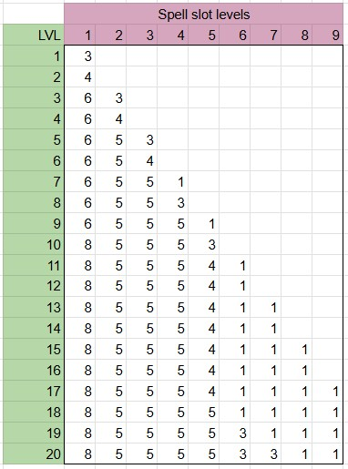

Core Witch¶
This section first describes the unique mechanics of Witch, intervoven with information that helps with roleplay.
The Witch gets these abilities at different time though, this should be covered by the guide in Leveling page.
At the moment I would recommend Dungeon Masters to forbid Witch multi-classing unless they have a flexible agreement with players on balancing during campaign. Very little though was given to multi-classsing to date. (If you do try, I would love to hear about it thought!)
Witch is a “she” by strong convention. If player and DM want a male Which, sure , but it than should a strong part of the PCs identity.
Each Witch has a senior Witch that taught her the basics of what being a Witch is all about. It is crucial that player has a good idea about who this mentor is, as it has likely shaped the Witch herself.
Additional Roleplay suggestions¶
Witch does not seek straight up fights, she aims to outwit the enemy into defeating themselves. This should be reinforced by the highly utilitarian nature of Witches abilities.
Starting equipement¶
Pointy hat. This is part of witch’s identity. While wearing a pointy hat Witch has +1 to spell casting ability score. For this to be active Witch must be wearing any pointy-hat, not a specific one, but it must be clearly visible. Witch simply becomes more of a witch when it is clear to everyone she is one.
Travel cauldron
Travel kettle, and bunch of herbs for tea (player selection)
4 small health potions
Headology¶
Witches have magical talent and can cast spells, the same way Sorcerers do. However, Witch understands that tinkering with magic should not be done lightly, and prefers tricking others into thinking she is casting magic. This is called “headology”, and applies for spells that could take effect simply due to psychology, without the need for magic.
These spells are marked (H) in the Spells List. When Witches cast headology it takes significantly less magical effort than conventional magic. It takes one spell-slot for a Witch to cast “headology” spell, while it takes 3 spell slots to cast conventional spells (1 of the appropriate level, supplemented by 2 of any level). For balance this is accomodated for by Witches having comparably more spell slots than other classes. In practice Witch should be able to cast way more if she uses headology most of the time, and way less if she uses other spells. “Headology” cantrips cost nothing, while non-headology cantrips cost 1 lvl-1 spell slot.
The degree to Witch wants to restrain herself from casting “real” magic (a.k.a. not headology) is up to a player. However, on default Witches should be reserved in that regard, which also helps mechanically.
Borrowing¶
Witch can invade consciousness of another being, seeing throw their eyes and commanding their actions. It is traditional that Witch thanks the target later for their service (i.e. by providing food).
The Witch herself is essentially uncounscious while this is happening, her body going limp as if she was in very deep sleep.
To command a beast or animal to do something that would be against their nature will require deception/persuasion checks resisted by target intelligence saving throw.
(TODO: make list of intelligences for beasts and animals, for now at DMs discretion)
To initiate this Witch must be aware of animals presence within 300ft.
The Range of how far the animal can travel under this effect is 3km.
This takes bonus action to initiate. It takes action and bonus action of the animal to return back.
For roleplaying purposes Witch is aware that this may be dangerous. The longer the Witch borrows the mind of the animal, the more she becomes that animal. Witches have been known to have their mind lost to the animal while borrowing, never returning to their body.
Proficiencies¶
Witches will not wear armour on principle, this is beneath her (with exception of BW).
Proficient with spell-casting focuses.
Witches are not technical proficient with any weapons, but in their hands anything can be temporarily used as a weapon. Improvised weapon attack with a “surprise” weapon (witch just picked up) will have advantage on hit for this and next turn. Player is expected to provide a plausible way to use the “weapon” to hurt somebody. Any improvised weapon will do 1d4+1 dmg (as opposed to 1d4) and can be imbued by other effects very easily (Bone of recently deceased zombie will do +proficiency score in necrotic damage, hot poker will do +proficiency score in fire damage…. At DMs discretion). This is intended for low stakes combat and mainly for roleplaying purposes, but can also be a decent supplmental damage at early levels.
Medicine (always), can be picked again below to enhance the effect.
Choose 3 skills to be proficient with from : Investigation, Nature, Animal Handling, Insight, Medicine, perception, survival (more will come from subclass at higher level)
Witch is an independent entity and proud of her skills - she cannot get “help” when undertaking any skill based activities that she is proficient in (This should be balanced by extra abilities).
Ability Scores¶
Witch is not characterised by being specifically wise, or intelligent or charismatic. What makes a Witch a Witch, is being able to utilize to great potential the innate abilities she possess. Empathetic which will rely on her charisma (EMP). Witch that has learned from books will rely on intellect (BW). Witch that learns by careful observation of the world and situation around her will rely on her wisdom (OWL).
Ability spell-casting modifier is based on subclass. EMP = charisma. OWL = wisdom. BW = bookworm.
Spell Slots¶
Witch learns 3 cantrips immediately, and 1 more cantrip at lvl 5. She stays at 4 for the rest of the campaign, but can replace cantrip at levels 10 and 15 (be flexible DMs! :P)
The goal is for a Witch to be able to cast more than any other class if using headology spells, but less than Wizard and Sorcerer if using non-headology spells.
The logic currently addopted is as follows:
Take table for Wizard.
All spell slots are multiplied by 1.5.
All that started with 1 get rounded down (1s stay 1s), and the highest level currently available is rounded down.
All others are rounded up.
You don’t have to do the math yourself, here is a table:
{kind=link}
Note, the balance has only been tested at low level of play. Please give feedback, this will inevitably be adjusted in future for balance.
Known Spells¶
Again, subject to balance.
For now:
LvL1 : 2
LvL2 : 3
Lvl3 : 4
From then on, learning 1 every 2 levels. BW learns extra 1 spell every 2 levels from scroll. This does not require any gold. However, Witch has to use another scroll to replace 1 of these slot, all spells are prepared.
Notes for gameplay¶
Early game heavy use of headology can do a lot, later in the game which will have to rely on her sub-class to be useful in combat - overall Witch should be a high utility, low dps character.